Figure 2.3.4-1 Roster Overview
The scenarios in this section show an instructor how to add and remove users to/from the class roster. The instructor can also edit the students' permissions and import a roster. In addition, the instructor can manage students' requests to join the class.
To display the Roster page the instructor clicks the Roster button highlighted in Figure 2.3.4-1. This button shows up on any page the instructor is viewing.
Figure 2.3.4-1 shows an overview of the roster page.
Figure 2.3.4-1 Roster Overview
On this screen, the CSTuror shows a roster of two students and one student that requested to join the class. The checkboxes next to a student's name indicated which permissions the student has in the class. In addition, the checkboxes next to a student requesting to join a class allows an instructor the either confirm or deny the student's request. The instructor can also use the Submit button to save any changes made on the roster page.
This scenario shows how the instructor of a class can add users to the class roster.
Adding users is important because it allows the instructor to put students into a class for stat tracking and allows students to view the lessons in the class. The instructor can also set permissions to allow a teacher's assistant to help manage the class.
In this scenario, we assume that the instructor has just logged into the appropriate class and is looking at the instructor page.
Details of logging in as an instructor can be found in
Section 2.1.
To add a user to the class roster, the instructor clicks Add User button on the roster screen and the CSTutor shows the diaglog box in Figure 2.3.4.1-1.
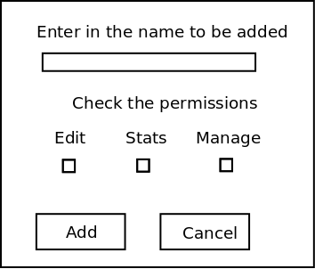
Figure 2.3.4.1-1: Add User Dialog.
The user field is a one line string where a person's user name is typed in. The instructor then enters in the name Abby Adams into the text box.
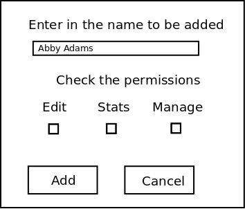
Figure 2.3.4.1-2: Add User Dialog with input text.
After the user name is entered, the instructor clicks Add to add the user to the class roster. Figure 2.3.4.1-2 shows the updated roster.
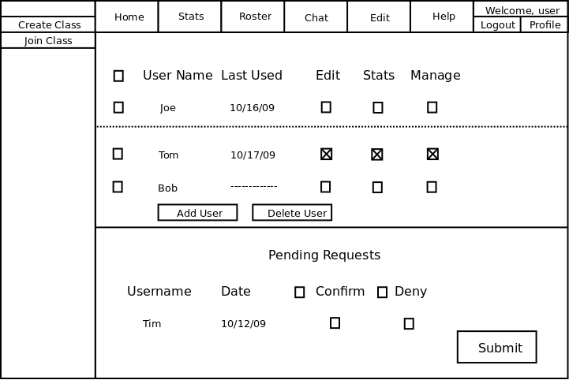
Figure 2.3.4.1-3: Add User Result Dialog.
The instructor can now click the Submit button and save the roster changes to the database.
This scenario shows the instructor of a class how to remove users from the class roster.
Removing users is important because it allows the instructor to properly manage the class roster.
In this scenario, we assume that the instructor has logged in, selected the appropriate class, and is viewing the roster page.
Details of logging in as an instructor can be found in
Section 2.1
To remove a user from the class roster, the instructor selects one of the check boxes to the left of a student's name. In addition, the instructor can remove multiple users by checking more than one check box. Then, the instructor clicks the Delete User button on the roster screen. Figure 2.3.4.2-1 shows how to remove a user.
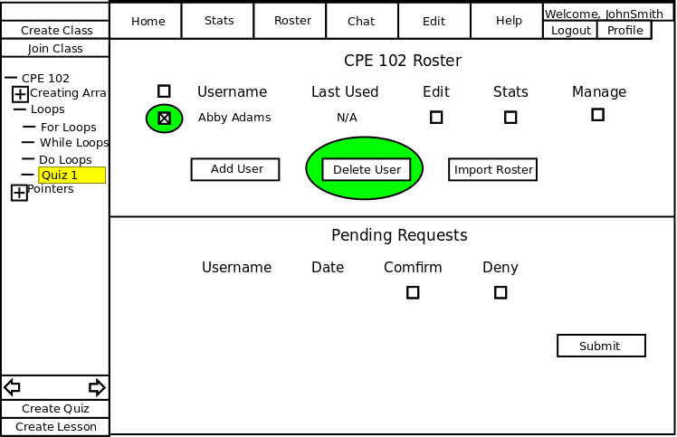
Figure 2.3.4.2-1: Delete User Dialog.
After clicking Delete User, the system shows the following dialog box shown in figure 2.3.4.2-2.

Figure 2.3.4.2-2: Remove User Confirmation.
To confirm deleting a user, the instructor clicks the Ok button. Figure 2.3.4.2-3 shows the results of removing the student from the roster.

Figure 2.3.4.2-3: Updated Roster.
The student has been removed from the roster and now the instructor can click the Submit button to save the changes to the database.
This scenario shows the instructor of a class how to edit user's permissions in class roster.
Editing permissions is important because it allows the instructor the option of having a teacher's assistant or give extra permissions to students in the class.
In this scenario, we assume that the instructor has logged in, selected the appropriate class, and is viewing the roster page.
Details of logging in as an instructor can be found in
Section 2.1
This scenario shows how the instructor of a class can edit permissions for users currently in the class. To edit a user's permissions, the instructor clicks the check boxes to the right of a user's name. Then, the instructor clicks the Submit button at the bottom of the screen to save the changes. Figure 2.3.4.2-1 shows and overview of the roster.

Figure 2.3.4.3-1: Edit User Overview.
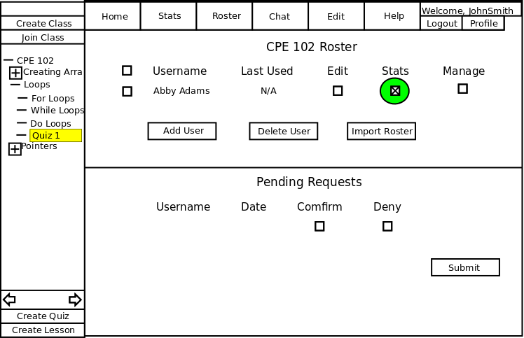
Figure 2.3.4.3-2: Permissions Checked.
The stats option for the Abby Adams has been selected, which allows the student to view the stats pages for the class. Figure 2.3.4.3-3 shows how to save the changes.
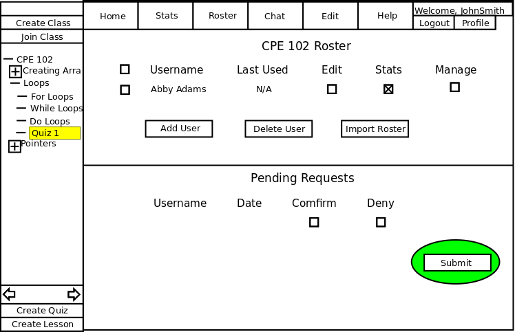
Figure 2.3.4.3-3: Save Changes.
The Submit button saves the changes made by the instructor to the database.
This scenario shows the instructor of a class how to manage requests to join the class roster.
Managing requests to join the class roster is important because it lets students join a private class and read the tutorials associated with it.
In this scenario, we assume that the instructor has logged in, selected the appropriate class, and is viewing the roster page.
Details of logging in as an instructor can be found in
Section 2.1
To manage pending requests, the instructor looks at the bottom of the Roster page to see if there is anyone requesting to join the class. Figure 2.3.4.4-1 shows an overview of the roster page with a pending request to join the class.

Figure 2.3.4.4-1: Roster Overview with Pending Request.
To confirm a student's request, the instructor checks the confirm check box next to a student's name. Figure 2.3.4.4-2 shows how this is done.
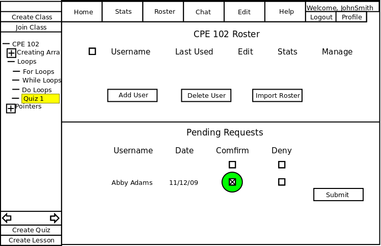
Figure 2.3.4.4-2: Roster Overview with Pending Request Checked.
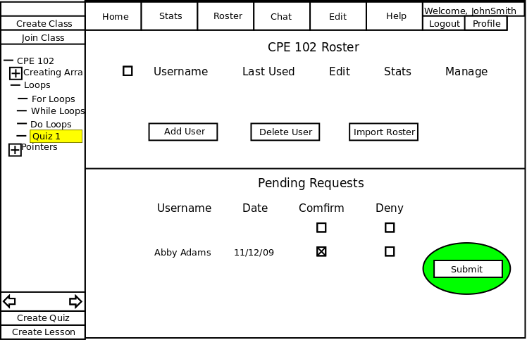
Figure 2.3.4.4-3: Roster Overview Submit.
The Submit button saves the changes made by the instructor to the database. Figure 2.3.4.4-4 shows the student added to the roster.
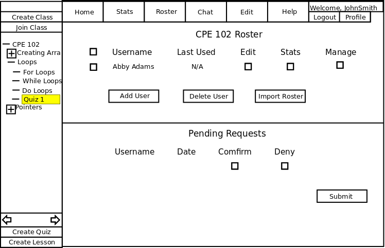
Figure 2.3.4.4-4: Student Added to the Roster.
This scenario shows the instructor of a class how to import a class roster from the Grader tool to the CSTutor. Importing a class roster is important because importing allows the instructor to add multiple students at once from an existing data source. In this scenario, we assume that the instructor has logged in, selected the appropriate class, and is viewing the roster page. Details of logging in as an instructor can be found in Section 2.1
To import a class roster, the instructor clicks the Import Roster button on the roster page. Figure 2.3.4.5-1 shows and empty roster before any users have been added.
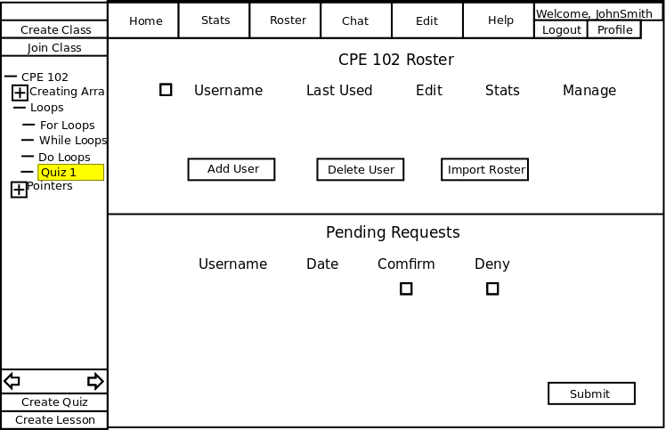
Figure 2.3.4.5-1: Empty Roster.
After clicking the Import Roster button, the CSTutor displays the dialog box shown in Figure 2.3.4.5-2.
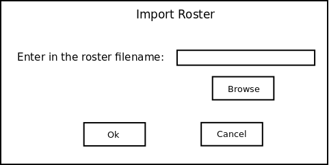
Figure 2.3.4.5-2: Import Dialog.
The instructor enters in the name of the roster file from either the keyboard or by using the file browser. For the CSTutor to import from a roster file, students names must be paired with their email address, and a new line character separates each student record. Figure 2.3.4.5-3 shows import dialog with the filename entered by the instructor.
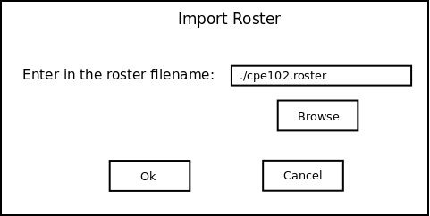
Figure 2.3.4.5-3: Import Dialog with Text.
When the instructor clicks the Ok button, the CSTutor adds the students to the roster. The CSTutor creates accounts for students that do not have an account creadted. In addition, the CSTutor emails students their passwords for the CSTutor. Then, the CSTutor displays the updated roster page shown in Figure 2.3.4.5-3
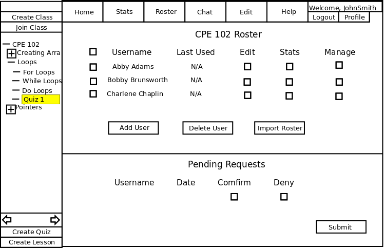
Figure 2.3.4.5-4: Roster Populated from Import.
The instructor can now click the Submit button to save the changes to the database.
Prev: Using the Statistics Page | Next: Previewing a Lesson | Up: Using the Instructor Page | Top: index